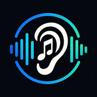

Apps
Des outils que je développe pour les musiciens, les chanteurs et les profs de musique.
Tools I build for musicians, singers and music teachers.
-

MusiDev
Une app éducative pour développer l'oreille, lire la musique et pratiquer son instrument, avec des exercices générés au hasard.
An educational app to train your ear, read music and practise your instrument, with randomly generated exercises.
Découvrir MusiDevDiscover MusiDev -

EZ Lyrics
Colle une feuille d'accords : EZ Lyrics enlève les accords, garde les paroles et les sections pour le chanteur, puis te donne un PDF propre à imprimer.
Paste a chord sheet: EZ Lyrics removes the chords, keeps the lyrics and song sections for the singer, and gives you a clean PDF to print.
Ouvrir EZ LyricsOpen EZ Lyrics -

Chart It
Colle un lien YouTube ou ouvre un fichier audio : Chart It écoute la chanson et te donne la grille d'accords à la façon d'un Real Book, avec la forme, les sections et le nombre de mesures. Aperçu, impression et PDF.
Paste a YouTube link or open an audio file: Chart It listens to the song and gives you a Real Book–style chord chart, with the form, sections and bar count. Preview, print and PDF.
Ouvrir Chart ItOpen Chart It -

Tonality
Colle un lien YouTube ou ouvre un fichier audio : Tonality transpose la chanson en temps réel, sans changer le tempo, et te donne la tonalité de départ et les modulations. Capo, boucle A-B, tempo et notes personnelles.
Paste a YouTube link or open an audio file: Tonality transposes the song in real time without changing the tempo, and shows the starting key and key changes. Capo, A-B loop, tempo and personal notes.
Ouvrir TonalityOpen Tonality